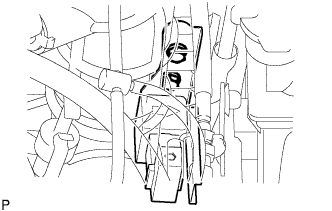

Front airbag sensor LH removal |
| 1. Handling / Work precautions |
reference)| 2. Remove the battery |
Remove the nut and bolts and remove the battery clamp.
Take off the battery.
Take off the battery tray.
| 3. Remove the air cleaner ASSY |
Remove the air cleaner cap w/air cleaner hose No.1.
Remove the air cleaner filter element.
Remove the four bolts and remove the air cleaner case W/Air Cleanine Let No.1 and No.2.
| 4. Remove the front airbag sensor LH |
Remove the two bolts and remove the front air passage sensor LH.
|  |
Cut the connector from the front air cross -grade sensor LH.